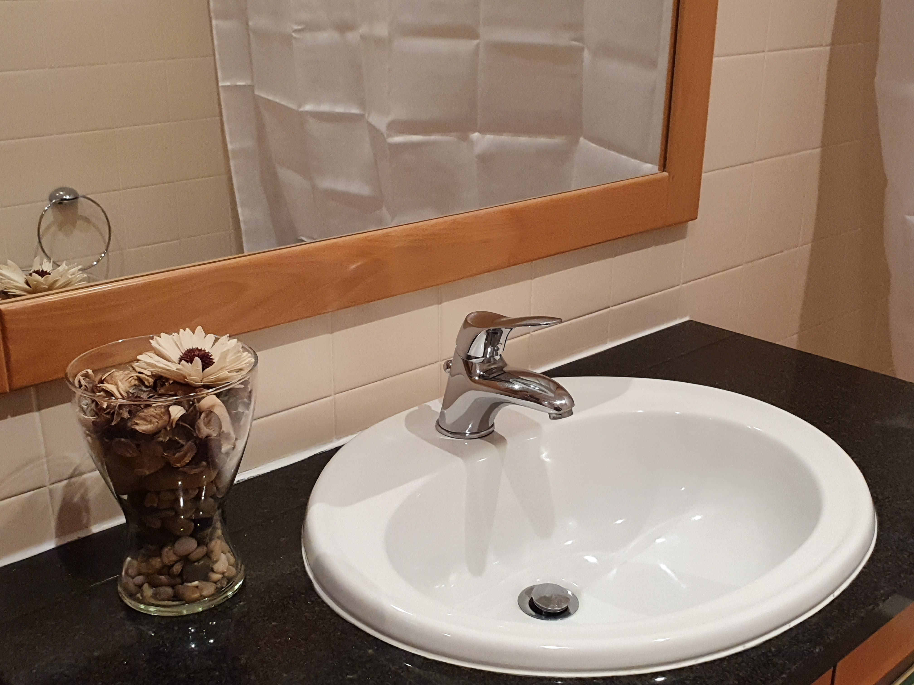
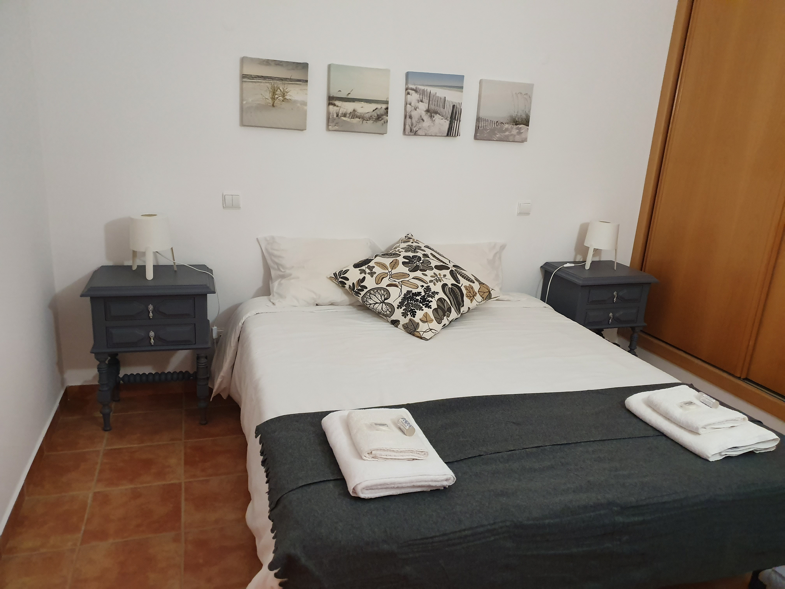

Os Alojamentos
Os Apartments Belleview Lagos oferecem alojamentos T1 amplos, luminosos e cuidadosamente preparados para proporcionar uma estadia tranquila, confortável e autêntica no Algarve. Cada apartamento combina serenidade, privacidade e funcionalidade, criando um ambiente ideal para descansar, trabalhar ou explorar Lagos ao seu ritmo.
Com terraços generosos e envolventes zonas verdes, os alojamentos convidam a momentos de descontração ao ar livre, leitura, refeições tranquilas ou simplesmente contemplação do clima ameno algarvio. A atmosfera acolhedora, aliada à localização estratégica perto das praias e dos principais serviços, transforma cada estadia numa experiência equilibrada entre conforto, bem‑estar e conveniência.
Perfeitos para casais, famílias ou viajantes independentes que valorizam qualidade, tranquilidade e uma estadia moderna, os alojamentos Belleview destacam‑se pela autenticidade, pela harmonia dos espaços e pela sensação de “casa longe de casa”.


Os Apartamentos
Os nossos apartamentos T1 foram concebidos para quem procura conforto, luminosidade e proximidade ao mar, num ambiente moderno e totalmente equipado. Cada unidade oferece uma experiência de alojamento prática e acolhedora, ideal para férias, escapadinhas românticas, teletrabalho ou estadias prolongadas em Lagos.
Os apartamentos incluem um quarto com cama de casal, casa de banho com banheira, kitchenette equipada, sala com sofá‑cama de casal e um terraço espaçoso perfeito para aproveitar o clima do Algarve. A decoração equilibrada, a funcionalidade dos espaços e a abundante luz natural criam um ambiente relaxante e convidativo, pensado para que se sinta verdadeiramente em casa.
Inseridos no complexo turístico Marina Park, os apartamentos beneficiam de uma envolvente excecional: amplas zonas verdes, duas piscinas (adultos e crianças), dois campos de ténis, parque infantil e um bar‑restaurante de apoio que complementa a experiência com comodidade e lazer. Esta combinação entre alojamento moderno e espaços exteriores de qualidade transforma o Belleview Lagos numa opção ideal para quem procura tranquilidade, bem‑estar e atividades ao ar livre num só lugar.
Embora existam várias unidades disponíveis, todos os apartamentos são idênticos em tipologia, tamanho, comodidades e estilo. A atribuição é realizada pela nossa equipa no momento da reserva, garantindo sempre a melhor opção disponível e uma experiência consistente de qualidade.


Composição dos Apartamentos
Os apartamentos T1 do Belleview Lagos foram projetados para oferecer uma combinação perfeita de conforto, funcionalidade e bem‑estar. Cada espaço foi pensado ao detalhe para proporcionar uma estadia moderna, prática e acolhedora, adaptada tanto a férias como a teletrabalho ou estadias de média e longa duração.
A distribuição dos ambientes privilegia a luz natural, a fluidez da circulação e o aproveitamento inteligente de cada área. O mobiliário funcional, a decoração harmoniosa e os equipamentos essenciais criam um ambiente equilibrado, onde é fácil relaxar, cozinhar, trabalhar ou simplesmente desfrutar do tempo em família.
A composição dos apartamentos reflete um compromisso com a qualidade, a simplicidade e a experiência do hóspede, garantindo conforto e comodidade em todas as fases da estadia.
Composição do apartamento
Destaques



Porque escolher o Belleview
Os apartamentos Belleview representam a harmonia perfeita entre tranquilidade e centralidade, combinando o ambiente sereno de uma zona residencial com a proximidade às mais emblemáticas praias do Algarve. Cada detalhe foi cuidadosamente concebido para garantir uma experiência de alojamento confortável, contemporânea e totalmente descomplicada — desde o sistema de check-in autónomo até à excelência e funcionalidade dos espaços interiores.
Os apartamentos destacam-se pela abundante luz natural, áreas generosas e uma atmosfera acolhedora que convida ao descanso e ao bem-estar. A sua localização estratégica permite acesso rápido e conveniente a praias, supermercados, restaurantes e serviços essenciais, tornando o Belleview Lagos uma opção ideal tanto para férias como para teletrabalho ou estadias de média e longa duração.
Seja para casais, famílias ou viajantes independentes, o Belleview Lagos afirma-se como uma referência em conforto, privacidade e qualidade, refletindo a autenticidade e hospitalidade que distinguem a cidade de Lagos.
O que os hóspedes mais gostam nos nossos alojamentos
Os hóspedes destacam frequentemente a limpeza impecável, o conforto das camas e a sensação de amplitude que os apartamentos oferecem. A luminosidade natural e a decoração moderna criam um ambiente relaxante e acolhedor, contribuindo para que muitos visitantes regressem ano após ano.
A localização é outro dos aspetos mais elogiados: perto das praias e dos principais serviços, mas suficientemente afastada do ruído para garantir descanso absoluto. A facilidade de estacionamento e o sistema de check‑in autónomo tornam toda a experiência simples, prática e conveniente, especialmente para quem chega tarde ou viaja em família.
O terraço privado é também um dos grandes favoritos, perfeito para tomar o pequeno‑almoço ao ar livre, trabalhar ao computador ou simplesmente aproveitar o clima ameno do Algarve. A combinação entre conforto interior e espaços exteriores agradáveis reforça a sensação de bem‑estar durante toda a estadia.
Regras da Casa
Check-out: até às 10:00
Berços gratuitos (0-2 anos), sujeitos à disponibilidade.
Não existem camas extra.
Consumíveis devem ser adquiridos pelos hóspedes após utilização dos disponibilizados.
Perguntas Frequentes
Todos os apartamentos T1 incluem quarto com cama de casal, sala com sofá‑cama, kitchenette equipada, casa de banho com banheira e um terraço espaçoso. Estão totalmente preparados para estadias curtas ou prolongadas, com utensílios de cozinha, eletrodomésticos essenciais, roupa de cama e toalhas.
O complexo Marina Park oferece amplas zonas verdes, duas piscinas (adultos e crianças), dois campos de ténis, parque infantil e um bar‑restaurante de apoio. É um espaço seguro, tranquilo e ideal para famílias, casais e viajantes que procuram lazer e bem‑estar ao ar livre.
As duas piscinas do Marina Park (adultos e crianças) funcionam sazonalmente, geralmente entre a primavera e o início do outono. O horário habitual é das 09h00 às 20h00, podendo variar consoante a época. O espaço é amplo, com zonas verdes envolventes e ambiente tranquilo.
Os campos de ténis do Marina Park têm um custo de utilização definido pela administração do complexo. O Belleview Lagos não disponibiliza raquetes nem bolas, pelo que os hóspedes devem trazer o seu próprio equipamento. A reserva e pagamento são efetuados diretamente na receção do complexo.
Sim. O Marina Park dispõe de um parque infantil seguro e rodeado de zonas verdes, ideal para famílias com crianças. É um dos espaços mais apreciados pelos hóspedes que procuram tranquilidade e atividades ao ar livre.
Sim. O Belleview Lagos utiliza um sistema de check‑in autónomo, permitindo chegar a qualquer hora sem necessidade de contacto presencial. Após a reserva, os hóspedes recebem instruções claras e simples para aceder ao apartamento de forma rápida e segura.
Sim. O complexo dispõe de estacionamento exterior gratuito e fácil, disponível para todos os hóspedes. A localização tranquila e segura permite estacionar com comodidade mesmo em épocas de maior procura.
Sim. Os apartamentos oferecem um ambiente calmo, luminoso e confortável, ideal para trabalhar à distância. O terraço privado, a boa iluminação natural e a tranquilidade da zona tornam o Belleview uma excelente opção para estadias de teletrabalho.
Sim. Os apartamentos estão situados a poucos minutos das principais praias de Lagos, mantendo ao mesmo tempo a tranquilidade de uma zona residencial. É o equilíbrio perfeito entre descanso e proximidade ao mar.
Os hóspedes elogiam sobretudo a limpeza, o conforto das camas, a luminosidade natural, o terraço privado, a tranquilidade da zona e a facilidade de estacionamento. A combinação entre conforto interior e espaços exteriores agradáveis é frequentemente destacada como um dos grandes diferenciais.
Comodidades
As comodidades dos Apartments Belleview Lagos foram pensadas para garantir uma estadia confortável, prática e tranquila, seja para férias, teletrabalho ou estadias prolongadas.
Desde infraestruturas completas a espaços exteriores envolventes, tudo foi concebido para que se sinta verdadeiramente em casa, com a conveniência de um alojamento contemporâneo e bem equipado.
Principais comodidades
Estacionamento
Cozinha
Quarto e Casa de Banho
Media e Tecnologia
Conforto e serviços
Localização
Os Apartments Belleview situam-se numa zona calma e estratégica de Lagos, na Meia‑Praia, inseridos no prestigiado complexo turístico Marina Park.
A Marina de Lagos encontra‑se a poucos minutos a pé, tal como a extensa Meia‑Praia, conhecida pela sua beleza natural e ambiente descontraído.
A área envolvente é segura, bem servida de serviços e perfeita para quem valoriza sossego, acessibilidade e uma estadia equilibrada entre natureza e conveniência.
Mapa
Veja a localização exata dos Apartments Belleview no mapa abaixo.